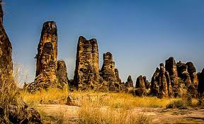

Les Falaises de Banfora
Description
Les Falaises de Banfora sont un site naturel spectaculaire situé à environ 15 km au sud-ouest de Banfora. Ces falaises de grès rouge, sculptées par l'érosion naturelle, offrent un paysage impressionnant et unique. Le site comprend plusieurs points d'observation qui offrent des vues panoramiques sur la région environnante.
Les visiteurs peuvent explorer les différents points de vue, découvrir les formations rocheuses uniques et apprendre sur la géologie locale. Le site est particulièrement impressionnant pendant la saison sèche, lorsque les couleurs des roches sont particulièrement vives.
Importance Naturelle et Culturelle
Les Falaises de Banfora sont un site naturel majeur de la région des Cascades du Burkina Faso. Elles témoignent de millions d'années d'érosion naturelle, créant des formations géologiques uniques qui témoignent de l'histoire géologique de la région. Le site est également un lieu sacré pour les communautés locales, qui y pratiquent des rituels traditionnels et des cérémonies liées à la fertilité et à la protection.
Depuis les années 1980, le site est devenu une destination touristique importante, attirant des visiteurs du monde entier intéressés par la géologie et la nature. Des efforts de préservation sont en cours pour protéger ces formations géologiques uniques et maintenir l'équilibre entre le tourisme et la protection de l'environnement.
Informations Pratiques pour la Visite
- Localisation : S'étendent au sud-ouest et à l'ouest de la ville de Banfora. Facilement accessibles.
- Activités : Randonnée, escalade (pour initiés), VTT, observation de la nature, photographie, visite des villages environnants, découverte des Cascades de Karfiguéla.
- Meilleure période pour visiter : Toute l'année, mais la saison sèche (octobre à mai) est plus propice aux longues randonnées. La saison des pluies offre des paysages plus verts et des cascades plus abondantes.
- Équipement conseillé : Bonnes chaussures de marche, chapeau, crème solaire, eau en quantité suffisante. Jumelles pour l'observation.
- Conseils : De nombreux sentiers existent. Il est possible de se promener librement sur certains tronçons, mais pour des explorations plus approfondies ou pour atteindre des points de vue spécifiques, un guide local est recommandé. Soyez prudent près des rebords de falaise.

{kind=link}
{kind=link}